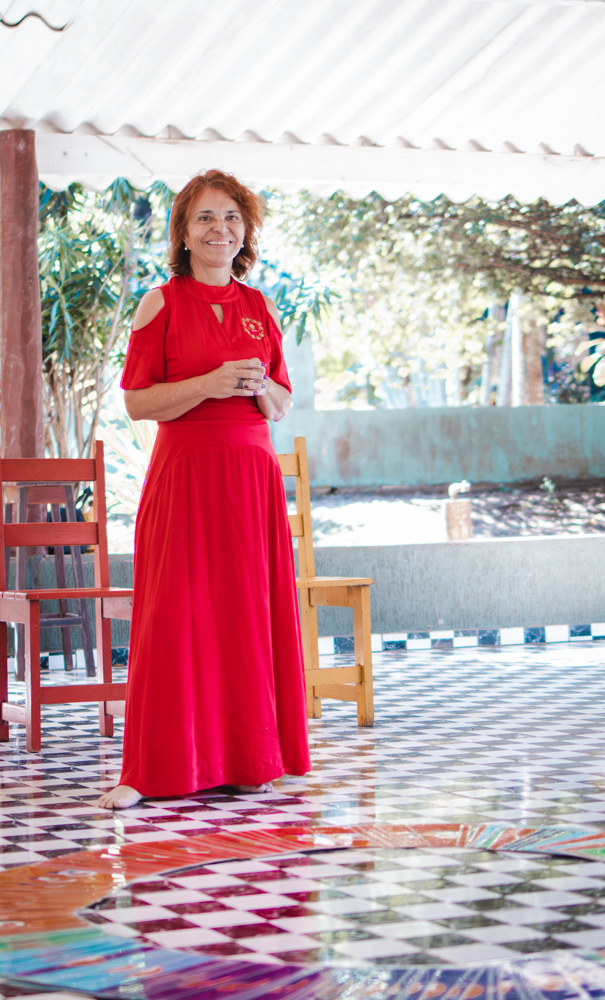
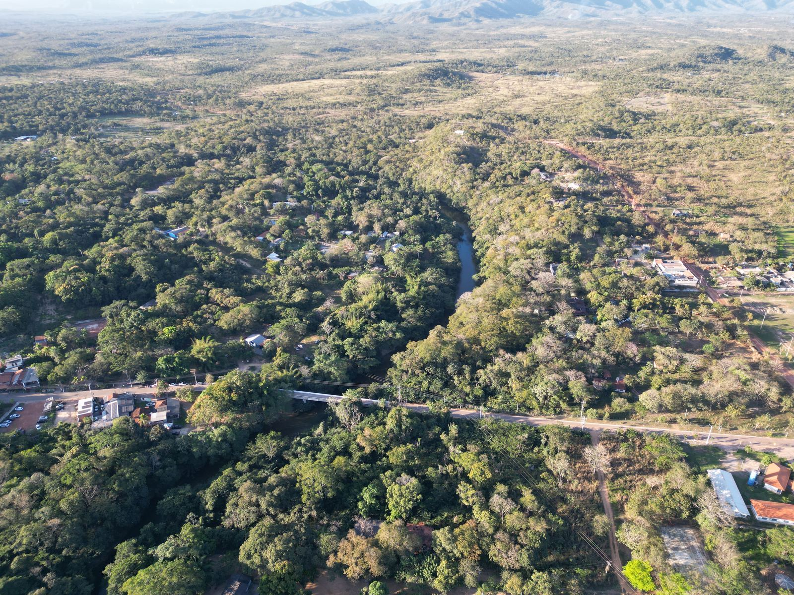
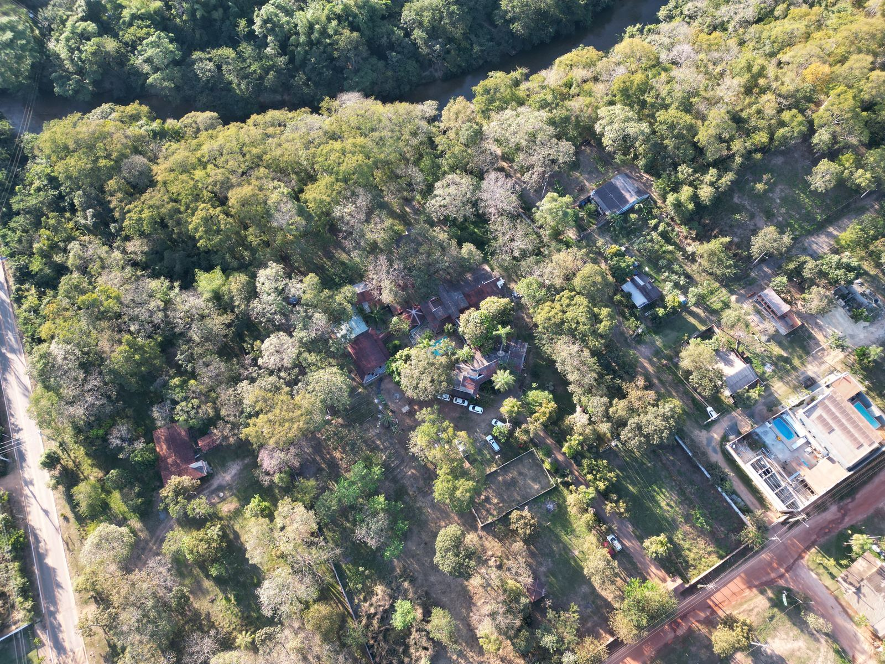
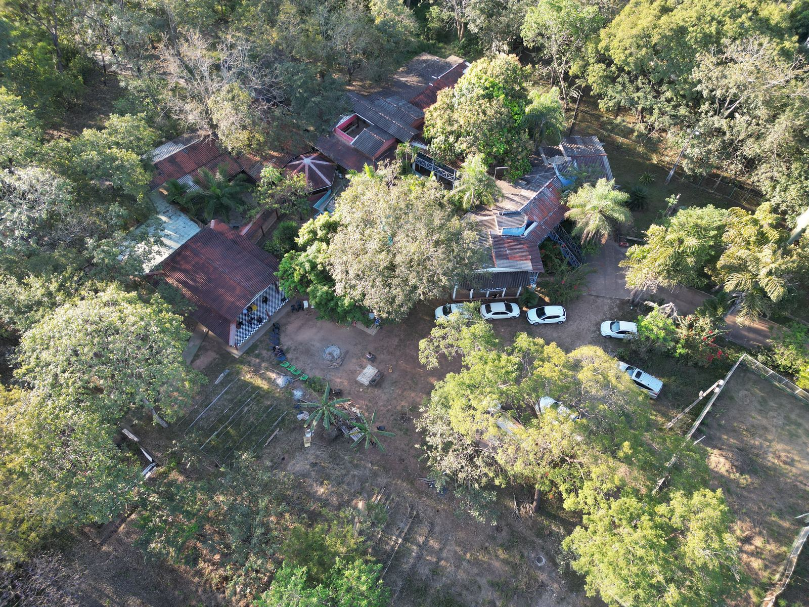

Constelação Familiar Sistêmica
Uma vivência coletiva de olhar para padrões familiares e sistêmicos, conduzida com escuta atenta ao grupo.
Contribuição solicitada: alimentos não perecíveis
Projeto Yes! Diga SIM à Vida
Uma celebração da vida aberta ao público, com constelação sistêmica, cerimônia do cacau e cerimônia de ayahuasca e rapé, na Chácara Namastê, em prol de quem mais precisa.

Palavras da Sita
"No dia 30 de julho completarei 59 anos de vida. Em vez de realizar apenas uma comemoração tradicional, quero transformar essa data em uma grande celebração da vida, alinhada ao propósito do projeto Yes! Diga SIM à Vida. Um evento aberto ao público, com vagas limitadas, e o passaporte para participar é a arrecadação de alimentos não perecíveis para pessoas em situação de vulnerabilidade."
Sita faz aniversário em 30 de julho e escolheu celebrar a vida com todos nós no sábado, dia 01 de agosto.
01 de agosto · Chácara Namastê
Uma vivência coletiva de olhar para padrões familiares e sistêmicos, conduzida com escuta atenta ao grupo.
Contribuição solicitada: alimentos não perecíveisUm encontro contemplativo com o cacau cerimonial, usado tradicionalmente como abertura do coração e conexão em grupo.
Contribuição solicitada: alimentos não perecíveisCerimônia espiritual tradicional, conduzida por facilitadores experientes, com respeito aos protocolos e à segurança de todos. Recomendada para maiores de 18 anos.
Contribuição solicitada: R$ 100Parabéns, bolo e guaraná, e todos juntos para celebrar a vida da Sita!

"Celebrar a vida é dizer sim a quem caminha ao seu lado, na troca simples e generosa entre dar e receber."
A causa
A entrada no evento é a doação de alimentos não perecíveis, trazidos no próprio dia da festa. Depois da celebração, Sita e a equipe do IIUT levam pessoalmente cada doação a casas de caridade que acolhem pessoas em situação de vulnerabilidade.
É a essência do Instituto Internacional Universo Terra em movimento: assistência social, cultura e cuidado com quem mais precisa, alinhados à Agenda 2030 e aos Objetivos de Desenvolvimento Sustentável da ONU.
Como chegar
Coxipó do Ouro, Cuiabá/MT: espaço natural com acesso ao rio, ideal para um dia de celebração, cerimônia e descanso.



"Um espaço para respirar, se conectar e dizer sim à vida, com acesso ao rio e ao verde da Chácara Namastê."
Endereço aproximado. O ponto exato de encontro será enviado após a confirmação de presença.
Vagas limitadas
Seu ingresso: alimentos não perecíveis para quem precisa.
Chame no WhatsApp01.08 · Chácara Namastê · Coxipó do Ouro